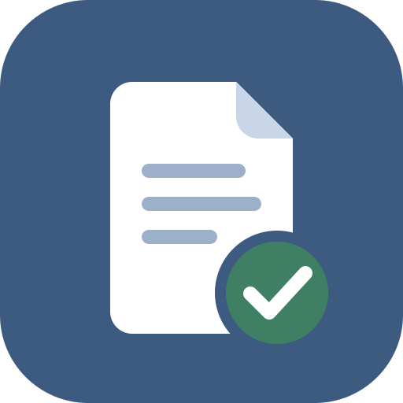

ЗаметноИнструкция пользователя · заметки с отметкой о выполнении, поиском, корзиной, экспортом и импортом
1. О приложении
«Заметно» — простое приложение для заметок и дел. Пишите заметки, отмечайте выполненные, ищите нужное, выгружайте список в PDF или Excel.
- Работает на телефоне, планшете и компьютере.
- После первого открытия работает без интернета.
- Заметки хранятся только на вашем устройстве и никуда не отправляются.
- Светлая и тёмная тема: кнопка ☾ / ☀ вверху, рядом с «?». Пока тема не выбрана, приложение следует настройке устройства; выбранная тема запоминается.
2. Установка
Откройте эту ссылку в браузере, затем:
| Устройство | Как установить |
|---|---|
| Android (Chrome) | Кнопка Установить в приложении или меню ⋮ → Установить приложение. |
| iPhone, iPad (Safari) | Кнопка Поделиться □↑ → На экран «Домой» → Добавить. |
| Компьютер (Chrome, Edge) | Кнопка Установить в приложении или значок ⊕ справа в адресной строке. |
После установки значок «Заметно» появится на домашнем экране или рабочем столе, приложение будет открываться в отдельном окне. Пользоваться можно и без установки — прямо в браузере.
Android: установка из файла APK
Скачайте файл по ссылке или получите файл Заметно.apk от знакомых (тогда интернет не нужен):
- Откройте файл (например, из «Загрузок» или из сообщения).
- Если телефон попросит — разрешите установку из этого источника: Настройки → Разрешить из этого источника, затем вернитесь назад.
- Нажмите Установить, затем Открыть.
Обновление — так же: откройте новый файл APK и нажмите Обновить, заметки сохранятся. В приложении из APK файлы экспорта открываются через меню Поделиться (сохранить в «Файлы», на диск или отправить), а PDF — через системную печать (Сохранить как PDF). Заметки приложения из APK и веб-версии хранятся отдельно; перенести их можно через резервную копию.
3. Заметки
Создать
- Напишите текст в большом поле. Первая строка станет заголовком заметки в списке.
- Нажмите Сохранить (или Ctrl+S).
- Заметка появится в списке Сохранённые заметки, поле очистится для следующей.
Кнопка + Новая заметка вверху тоже очищает поле для новой записи.
Открыть и изменить
- Нажмите на заметку в списке — её текст откроется в поле (только для чтения).
- Нажмите Редактировать, внесите изменения и нажмите Сохранить.
Закрыть без сохранения
Кнопка Отменить (или Esc) закрывает открытую заметку и очищает поле. Если вы начали правку, изменения отменятся — сохранённый текст останется прежним.
Удалить
Откройте заметку и нажмите Удалить — она переместится в корзину, откуда её можно вернуть.
4. Выполнено / не выполнено
Поставьте галочку слева от заметки — она станет выполненной: зелёный фон, зелёная полоска слева, текст зачёркнут. Повторный щелчок снимает отметку.
Переключатель над списком:
- Обычный — все заметки одним списком в вашем порядке;
- По статусу — две группы: «Не выполнено» и «Выполнено», со счётчиками.
Выбранный вид запоминается.
5. Порядок заметок
- Возьмите заметку за значок ⠿ справа и перетащите вверх или вниз (мышью или пальцем).
- С клавиатуры: клавишей Tab перейдите на ⠿ и двигайте стрелками ↑ ↓.
- В виде «По статусу» заметку можно двигать только внутри её группы.
6. Поиск
Начните вводить слово в поле 🔍 Поиск по заметкам — список сразу отфильтруется.
- Ищется по всему тексту заметки; регистр и разница «ё/е» не важны.
- Найденное подсвечивается жёлтым; под списком — «Найдено: N из M».
- Очистить поиск — кнопка × или Esc.
7. Корзина
Удалённые заметки попадают в 🗑 Корзина внизу списка (видна, когда в ней что-то есть). Нажмите на неё, чтобы раскрыть.
- Восстановить — заметка вернётся на прежнее место, с прежней отметкой «выполнено» / «не выполнено».
- Удалить навсегда — удаляет без возврата.
- Очистить корзину — удаляет всё содержимое корзины без возврата.
8. Экспорт в файл
Кнопка ⬇ справа от переключателя вида открывает меню экспорта и импорта:
| Формат | Что получится |
|---|---|
| Документ PDF | Откроется окно печати — выберите Сохранить как PDF. Документ с разделами «Не выполнено» и «Выполнено». Открывается на любом устройстве. |
| Таблица Excel (.xlsx) | Таблица «№ · Заметка · Статус · Дата». Открывается в Excel, Google Таблицах, Numbers, LibreOffice. |
| Текстовый файл (.txt) | Простой текст: ☐ / ☑ и даты. Удобно читать и пересылать. |
| Резервная копия (.json) | Все данные, включая корзину. Из неё можно вернуть заметки — см. раздел 9. |
Файлы сохраняются в папку загрузок и называются по дате, например заметки-2026-09-29.xlsx. В файл попадают все заметки, даже если в поиске что-то введено.
9. Хранение, копия и перенос
Где хранятся заметки
- Заметки хранятся только на этом устройстве, в этом браузере. На другом устройстве будет свой, отдельный список.
- Если удалить приложение или очистить данные браузера (историю, файлы cookie и данные сайтов), заметки удалятся.
Резервная копия
Время от времени сохраняйте копию: ⬇ → Резервная копия (.json). В ней всё: заметки, отметки «выполнено», порядок и корзина.
Вернуть заметки из копии или перенести на другое устройство
- Перешлите файл копии (.json) на нужное устройство — например, по почте или в мессенджере.
- Откройте приложение и нажмите ⬇ → Импорт из резервной копии (.json).
- Выберите файл. Приложение покажет, что в нём: сколько заметок и сколько выполнено.
- Выберите, как загрузить:
- Добавить к моим заметкам — заметки из копии появятся в конце списка; то, что уже есть, повторно не добавится;
- Заменить мои заметки — список станет таким, как в копии, а ваши текущие заметки перейдут в корзину — их можно восстановить.
10. Горячие клавиши
| Клавиши | Действие |
|---|---|
| Ctrl+S (на Mac ⌘+S) | Сохранить заметку |
| Esc | Закрыть открытую заметку без сохранения; в поле поиска — очистить поиск; закрыть меню экспорта или окно импорта |
| Tab, затем ↑ ↓ на ⠿ | Переместить заметку |
| Ctrl+P | Печать / сохранение в PDF |
11. Вопросы и ответы
Пропали заметки
Проверьте, что вы открыли приложение на том же устройстве и в том же браузере, где их создавали. Заметки пропадают и после очистки данных браузера. Если есть резервная копия — верните заметки через ⬇ → Импорт из резервной копии.
Нет кнопки «Установить»
На iPhone и iPad установка — через Поделиться → На экран «Домой». Если приложение уже установлено, кнопка не показывается.
Красное сообщение «браузер запрещает сохранять данные»
Приложение открыто в режиме, где сохранение отключено (например, в окне предпросмотра или в режиме «инкогнито»). Откройте его по обычной ссылке или из установленного значка.
Кнопка «Сохранить» неактивна
Заметка открыта только для чтения — сначала нажмите Редактировать.